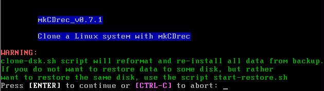
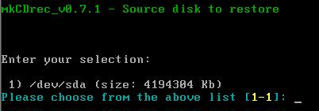
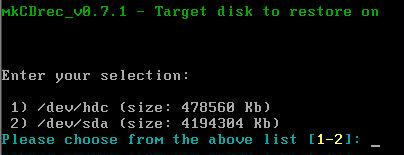
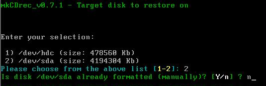
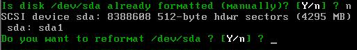
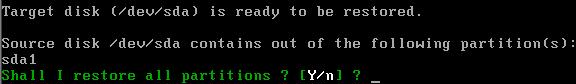
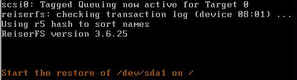
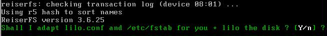
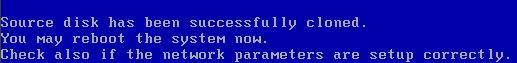

If the archives are not on a CD-ROM make sure the tape is inserted, or the file system has been mounted where original backups were stored on.
To clone one disk go into the /etc/recovery directory and type ./clone-sk.sh

Just follow the questions and select what you want:









That’s about it for cloning a disk.
Or maybe not!
Before rebooting always double check the /mnt/local/etc/lilo.conf file, or /mnt/local/boot/grub.conf file whether the boot and root device are correct. Need to change it? Use the “chroot /mnt/local” command to put the restored disks into root mode for the system.
Another issue that may strike you is when you clone to another PC which is 100% the same then it is perhaps necessary to edit the /mnt/local/etc/modules.conf file and change e.g. the scsi_hostadapter, eth0, and so on.
Also, a bit more tricky is when the initial ramdisk needs to be changed. Why do you need the initial ramdisk you might wonder? Well if the new PC has another SCSI card for example then the original one!
Think wisely before start using mkCDrec on the source PC and add the SCSI modules you might need on the target PC to the Config.sh file!
To create a new initial ramdisk do the following:
# cd /
# df
Make sure that /mnt/local (and /mnt/local/boot) are mounted. Also before doing a chroot mount also the /usr if needed.
# chroot /mnt/local
# cd /boot
# mv initrd-2.4.20-x.img initrd-2.4.20-x.img.sav
# mkinitrd –v --preload=BusLogic --omit-lvm-modules initrd-2.4.20-x.img 2.4.20-x
creates a new initial ramdisk. Execute the lilo command once more to be sure.